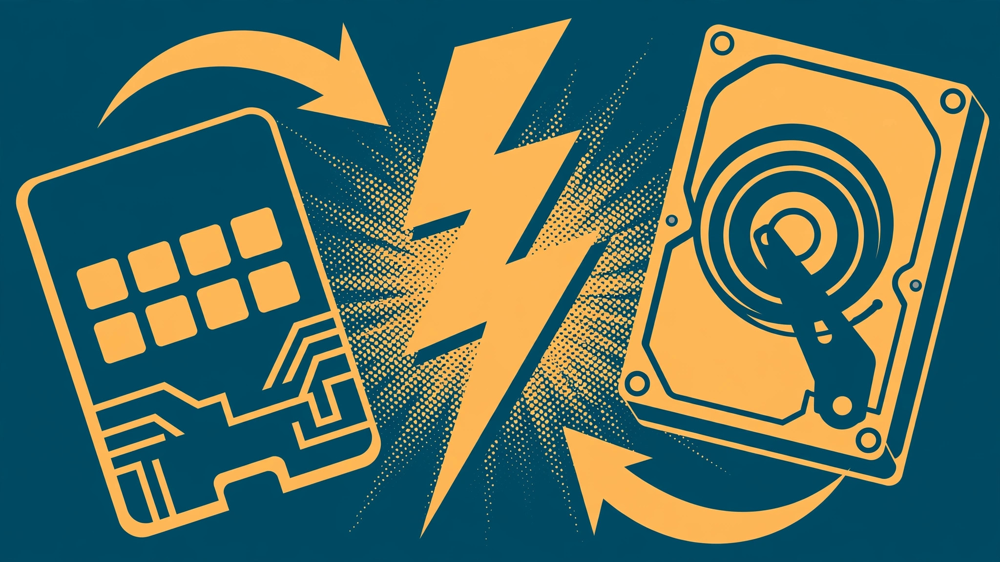
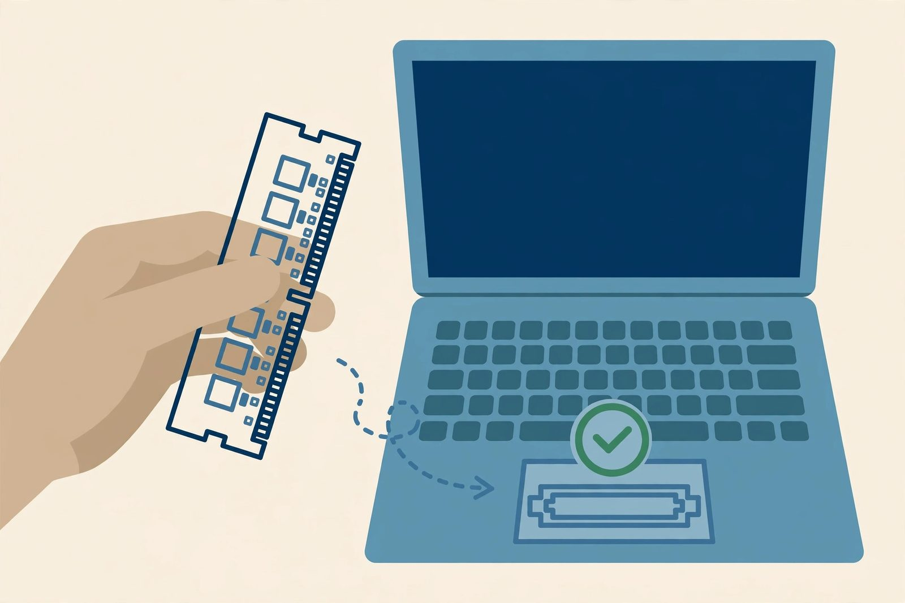
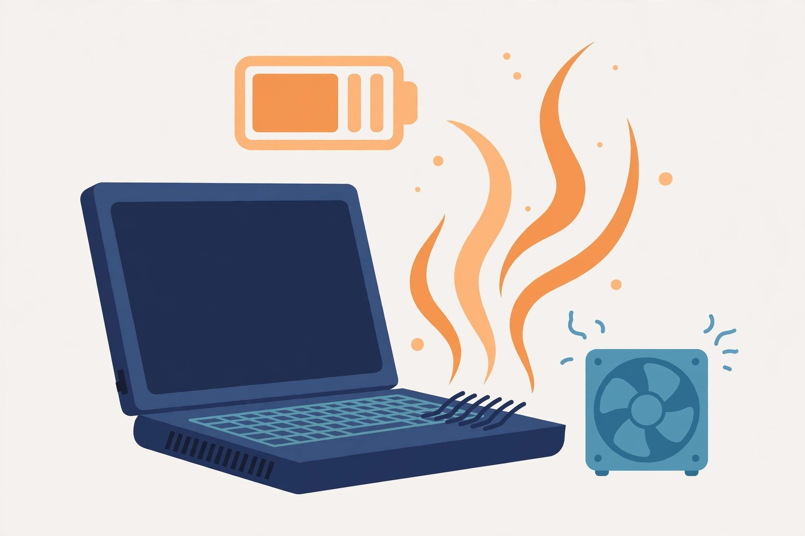
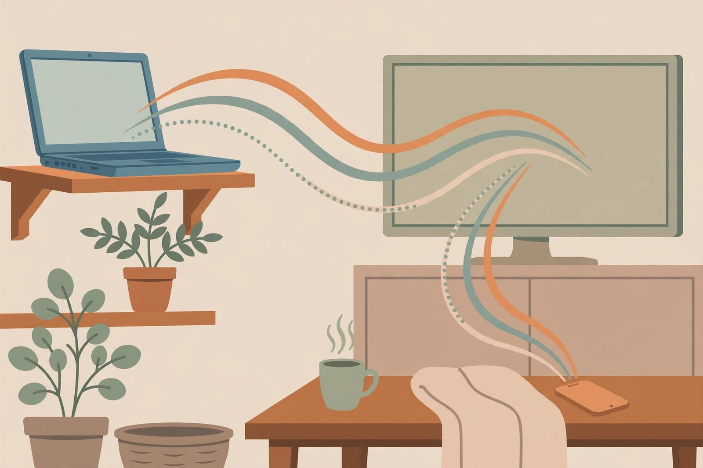

Latest guides
Five checks in a fixed order — physical switch, adapter power management, the driver, the network stack, then the router — each one stating what its result proves before you move on.
Triage the drive first — healthy, failing, or locked — then a live Linux USB or a dock copies the files off, most important first, with hard stop signs for physical failure.
The five physical signs, the stop-and-disconnect sequence, an honest DIY-versus-technician line, the data question, and disposal rules that name the acceptance trap.
Mint Xfce, Lubuntu, MX Linux, and Zorin OS Lite compared on their own published minimums — RAM, disk, the 64-bit cut-off, and the Zorin Lite sunset — with a live-USB test that decides.
The battery report on Windows, upower and acpi on Linux, the one division that yields a health percentage, and a decision framework for what the number means.
Baseline temperatures first, then the full repaste procedure: heatsink off in numbered order, alcohol-clean surfaces, the right amount of paste, an even remount, and a same-test verdict.
Backup first, sign out of everything, then Reset with Remove everything and Clean data — plus why SSDs need their own firmware erase, and what a failed drive means.
The caddy upgrade only pays off in the right order — measure the bay, check the SATA generation, put the SSD in the main bay and the old mechanical drive in the caddy.
A hand-me-down is a transfer of ownership: clear the previous owner, keep the parent admin account, give the child a standard Family Safety account, then set the limits.

A newer wireless card can fix old Wi-Fi and Bluetooth — if it passes three checks first: the slot generation, the CNVi trap, and the BIOS whitelist. Plus the swap itself, antenna leads included.

Boot order, UEFI vs legacy, Secure Boot, and virtualization — checked from inside Windows first, triaged into change, check, and never touch, so a settings visit never strands a working machine.

A failed screen is not a failed computer. The external-display test that separates a lid fault from a mainboard fault, the closed-lid desk setup, and an honest call on panel repair.

Google's free, browser-first OS can revive a Windows 10-era laptop — if it meets the published minimums and you can live without Windows programs. Check, test from USB, then install.

Slow is a symptom, not a diagnosis. A 15-minute routine with Task Manager, startup-impact numbers, and drive-health checks that names the real bottleneck first.

A free cleanup using only Windows' built-in tools: clear temporary files safely, thin the startup list, and let Storage Sense keep it that way.

Why swapping a spinning hard drive for an SSD transforms an old laptop — plus what to check before you start and how to move your system over.

More memory helps, but only the right kind. How to find what your laptop takes, how much it can use, and what the installation involves.
When the hardware is fine but the OS is the anchor: lighter Linux distributions and other options that breathe new life into aging laptops.

Cleaning dust from vents, reading battery health, managing heat — the maintenance basics that keep an old laptop running instead of throttling.

Don't let a working laptop gather dust. Set it up as a home media server that streams your movies and music to every device in the house.